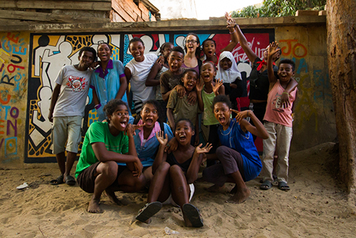
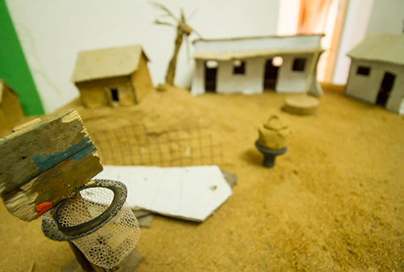

La grossesse précoce
Le court métrage « Safidin’i Pela » est le fruit d’un atelier cinéma d’animation qui s’est déroulé entre le mois de septembre et octobre 2015 à Tuléar, ville côtière du sud-ouest de Madagascar. L’atelier a été proposé aux bénéficiaires du Centre Art et Musique et du Foyer Social de l’ONG Bel Avenir, foyer dédié aux adolescentes en risque d’exclusion sociale et de grossesse précoce. Fin octobre, les 9 jeunes participant(e)s volontaires âgé(e)s de 11 à 19 ans présentent fièrement et en avant première leur création devant près de 200 spectateurs dans le vieux cinéma Le Tropic à Tuléar.

Selon le rapport 2011 « Les jeunes à Madagascar: faits et chiffres » de l’Unicef, 48,1% des jeunes filles entre 15 et 19 ans de la région de Atsimo-Andrefana, dont Tuléar est le chef-lieu, sont mères ou sont enceintes. En 2015, pour la même région et la même tranche d’âge, le Southern Africa Gender Protocol Alliance indique 56,2%. En d’autres termes, actuellement dans la région de Tuléar plus d’une adolescente sur deux tombe enceinte pour la première fois entre 15 et 19 ans et la situation à tendance à s’aggraver.

Malheureusement les grossesses précoces contribuent (avec les grossesses tardives, rapprochées et multiples) pour beaucoup aux taux élevés de mortalité, de mortalité infantile et juvénile, en particulier dans les pays pauvres. Les grossesses des adolescentes sont à risques. Elles augmentent également les taux de mortalité maternelle. Enfin, être une jeune maman réduit fortement la possibilité pour les jeunes femmes de faire des études et de travailler. Ces grossesses précoces risquent de porter un préjudice durable à leur qualité de vie et à celle de leurs enfants. (Binet, Gastineau et Rakotoson, 2010 : 257-272)
De cette constatation inquiétante est partie l’idée d’aborder la problématique de la grossesse précoce et plus particulièrement des relations entre adultes et jeunes filles car c’est une des causes courantes de grossesse précoce à Madagascar.